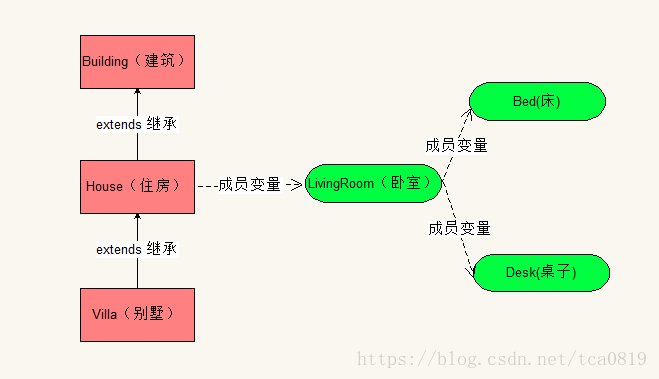

###############################
今天总结一下，new对象的初始化过程。
###############################
首先，当不含static成员时，先看一下案例图：

如图所示，我们先定义相关类，Building，House(继承Building)，Villa（继承House），同时，House有成员变量LivingRoom，LivingRoom有成员变量Bed和Desk。
具体代码实现如下：
1 //建筑
2 class Building {
3 public Building() {
4 System.out.println("Building");
5 }
6 }
7 //房子
8 class House extends Building{
9 public LivingRoom livingRoom = new LivingRoom();//卧室
10 public House() {
11 System.out.println("House");
12 }
13 }
14 //别墅
15 class Villa extends House{
16 public Villa () {
17 System.out.println("Villa");
18 }
19 }
20 //卧室
21 class LivingRoom {
22 public Bed bedFirst = new Bed();//床
23 public Desk deskFirst = new Desk();//桌子
24
25 public LivingRoom () {
26 System.out.println("LivingRoom");
27 }
28 }
29 //床
30 class Bed {
31 public Bed () {
32 System.out.println("Bed");
33 }
34 }
35 //桌子
36 class Desk {
37 public Desk () {
38 System.out.println("Desk");
39 }
40 }
41 此时，我们new Villa()：
42 public class InitializeDemo {
43 @Test
44 public void testInitialize() {
45 Villa villa = new Villa();
46 }
47 }
48 执行结果为：
49 Building
50 Bed
51 Desk
52 LivingRoom
53 House
54 Villa
在此案例中，我们在创建Villa对象时，会先试着创建Villa的父类House的对象，但House也有父类Building，Building还有父类object。因此，实际上，本类会先创建object对象并初始化，在object对象创建并初始化后，会创建building对象，building对象没有成员变量，所以直接执行构造器，打印出building。
接着，开始创建house对象，house对象有成员变量livingRoom，因此，会先初始化livingRoom，创建livingRoom时，也会先创建livingRoom的父类object对象并初始化没其次再创建livingRoom实例，livingroom同样有两个成员变量bed和desk，因而会按两个成员变量的定义顺序，先后创建bed和desk。初始化成员变量成功后，执行livingroom的构造器，打印livingroom。初始化livingroom成功后，开始执行house的构造器，打印house。
最后，在house初始化成功后，执行了Villa的构造器，打印出Villa。
初始化成功。
其次，当有static成员时
1 class Family {
2 Family (Class className) {
3 System.out.println("创建Family对象");
4 System.out.println(className.getName());
5 }
6 }
7 class Person {
8 Person() {
9 System.out.println("创建Person对象");
10 }
11 public static Family family = new Family(Person.class);
12 static {
13 System.out.println("执行Person静态代码块");
14 }
15 {
16 System.out.println("执行Person代码块");
17 }
18 }
19 public class Student extends Person {
20 public Student() {
21 System.out.println("创建student对象");
22 }
23 {
24 System.out.println("执行Student代码块");
25 }
26 static {
27 System.out.println("执行Student静态代码块");
28 }
29 public static Family staticFamily = new Family(Student.class);
30 @Test
31 public void test() {
32 System.out.println("=============");
33 }
34 public Family family = new Family(Student.class);
35 }
36 执行结果：
37 创建Family对象
38 com.tca.thinkInJava.chap7.Person
39 执行Person静态代码块
40 执行Student静态代码块
41 创建Family对象
42 com.tca.thinkInJava.chap7.Student
43 执行Person代码块
44 创建Person对象
45 执行Student代码块
46 创建Family对象
47 com.tca.thinkInJava.chap7.Student
48 创建student对象
1.首先在执行@test方法时，必须创建student的实例对象。
2.要创建student的实例对象，第一步先加载student父类person和student类的字节码，并对相关静态成员变量进行初始化，执行静态代码块。
3.首先加载父类person字节码，静态成员变量public static family ，family优于静态代码块前声明，所以先对静态成员变量family进行初始化。创建family对象，打印“创建family对象”，“xxxxxx”。
4.加载完person字节码后，再加载student字节码。静态代码块再静态成员public static family staticfamily之前声明，所以先执行静态代码块，打印“执行student静态代码块”，在进行成员变量初始化，执行“创建family对象”，“xxxxxxxxxx”。
5.创建student父类person的实例对象，创建实例对象时，先进行非静态成员变量初始化和代码块的执行，在执行构造器方法。所以先打印“执行person代码块”，再打印“创建person对象”。父类对象创建和初始化完毕。
6.创建子类对象student，先进行非静态成员变量初始化和代码块的执行，在执行构造方法。代码块的声明再非静态成员变量声明之前，所以先执行代码块，打印“执行student代码块”，再对family进行初始化，创建family对象，打印“创建family对象”，“xxxxxxxxxxx”。
7.执行test测试方法。
总结：
当不含static成员时，我们new一个对象A时，首先会先创建A类的父类B的实例对象，如果B类仍有C类，会先创建父类C的对象，以此类推，是一个递归创建的过程；当该类的父类对象已经全部创建并初始化时，会对该类进行创建和初始化。但在对该类进行初始化时，会先初始该类对象的成员变量，再执行该类的构造方法。成员变量的初始化和代码块的执行顺序，由它们声明顺序决定的，按顺序依次初始化或执行，但均在构造器方法之前执行。
当有static成员时，在该类第一次被JVM加载时，静态成员变量只会被初始化一次，静态代码块只会被执行一次。会先加载父类字节码，再加载子类字节码，如果有创建某类的实例对象，也是在该类的父类和该类的字节码加载完成之后，才会实例化该类父类的实例对象和该类的实例对象。静态成员变量的初始化和静态代码块的执行顺序，是由它们的声明顺序决定的，按顺序依次初始化或执行。